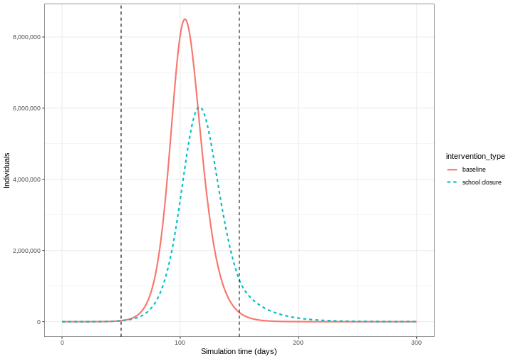

Content from Contact matrices
Last updated on 2025-05-06 | Edit this page
Overview
Questions
- What is a contact matrix?
- How are contact matrices estimated?
- How are contact matrices used in epidemiological analysis?
Objectives
- Use the R package
socialmixrto estimate a contact matrix - Understand the different types of analysis contact matrices can be used for
Introduction
Some groups of individuals have more contacts than others; the average schoolchild has many more daily contact than the average elderly person, for example. This heterogeneity of contact patterns between different groups can affect disease transmission, because certain groups are more likely to transmit to others within that group, as well as to other groups. The rate at which individuals within and between groups make contact with others can be summarised in a contact matrix. In this tutorial we are going to learn how contact matrices can be used in different analyses and how the socialmixr package can be used to estimate contact matrices.
R
library(socialmixr)
The contact matrix
The basic contact matrix represents the amount of contact or mixing within and between different subgroups of a population. The subgroups are often age categories but can also be:
- Geographic areas (e.g., different regions or countries)
- Risk groups (e.g., high/low risk occupations)
- Social settings (e.g., household, workplace, school)
For example, a hypothetical contact matrix representing the average number of contacts per day between children and adults could be:
\[ \begin{bmatrix} 2 & 2\\ 1 & 3 \end{bmatrix} \] In this example, we would use this to represent that children meet, on average, 2 other children and 2 adult per day (first row), and adults meet, on average, 1 child and 3 other adults per day (second row). We can use this kind of information to account for the role heterogeneity in contact plays in infectious disease transmission.
A Note on Notation
For a contact matrix with rows \(i\) and columns \(j\):
- \(C[i,j]\) represents the average number of contacts that individuals in group \(i\) have with individuals in group \(j\)
- This average is calculated as the total number of contacts between groups \(i\) and \(j\), divided by the number of individuals in group \(i\)
Using socialmixr
Contact matrices are commonly estimated from studies that use diaries to record interactions. For example, the POLYMOD survey measured contact patterns in 8 European countries using data on the location and duration of contacts reported by the study participants (Mossong et al. 2008).
The R package socialmixr contains functions which can estimate contact matrices from POLYMOD and other surveys. We can load the POLYMOD survey data:
R
polymod <- socialmixr::polymod
Then we can obtain the contact matrix for the age categories we want
by specifying age.limits.
R
contact_data <- contact_matrix(
survey = polymod,
countries = "United Kingdom",
age.limits = c(0, 20, 40),
symmetric = TRUE
)
OUTPUT
Removing participants that have contacts without age information. To change this behaviour, set the 'missing.contact.age' optionR
contact_data
OUTPUT
$matrix
contact.age.group
age.group [0,20) [20,40) 40+
[0,20) 7.883663 3.120220 3.063895
[20,40) 2.794154 4.854839 4.599893
40+ 1.565665 2.624868 5.005571
$demography
age.group population proportion year
<char> <num> <num> <int>
1: [0,20) 14799290 0.2454816 2005
2: [20,40) 16526302 0.2741283 2005
3: 40+ 28961159 0.4803901 2005
$participants
age.group participants proportion
<char> <int> <num>
1: [0,20) 404 0.3996044
2: [20,40) 248 0.2453017
3: 40+ 359 0.3550940Note: although the contact matrix
contact_data$matrix is not itself mathematically symmetric,
it satisfies the condition that the total number of contacts of one
group with another is the same as the reverse. In other words:
contact_data$matrix[j,i]*contact_data$demography$proportion[j] = contact_data$matrix[i,j]*contact_data$demography$proportion[i].
For the mathematical explanation see the
corresponding section in the socialmixr documentation.
Why would a contact matrix be non-symmetric?
One of the arguments we gave the function
contact_matrix() is symmetric=TRUE. This
ensures that the total number of contacts from one group to another is
equal to the total from the second group back to the first (see the
socialmixr vignette
for more detail).
However, when contact matrices are estimated from surveys or other sources, the reported number of contacts may differ by age group for several reasons:
- Recall bias: Different age groups may have different abilities to remember and report contacts accurately
- Reporting bias: Some groups may systematically over- or under-report their contacts
- Sampling uncertainty: Limited sample sizes can lead to statistical variations (Prem et al 2021)
If symmetric is set to TRUE, the
contact_matrix() function will internally use an average of
reported contacts to ensure the resulting total number of contacts are
symmetric.
The example above uses the POLYMOD survey. There are a number of
surveys available in socialmixr, to list the available
surveys use list_surveys(). To download a survey, we can
use get_survey()
R
zambia_sa_survey <- get_survey("https://doi.org/10.5281/zenodo.3874675")
Zambia contact matrix
After downloading the survey, generate a symmetric contact matrix for Zambia using the following age bins:
- [0,20)
- 20+
R
contact_data_zambia <- contact_matrix(
survey = zambia_sa_survey,
age.limits = c(0, 20),
symmetric = TRUE
)
OUTPUT
Removing participants without age information. To change this behaviour, set the 'missing.participant.age' optionOUTPUT
Removing participants that have contacts without age information. To change this behaviour, set the 'missing.contact.age' optionR
contact_data_zambia
OUTPUT
$matrix
contact.age.group
age.group [0,20) 20+
[0,20) 3.643137 2.282138
20+ 1.795546 2.542346
$demography
age.group population proportion year
<char> <num> <num> <int>
1: [0,20) 28813173 0.4403347 2010
2: 20+ 36621532 0.5596653 2010
$participants
age.group participants proportion
<char> <int> <num>
1: [0,20) 255 0.07535461
2: 20+ 3129 0.92464539Synthetic contact matrices
Contact matrices can be estimated from data obtained from diary (such as POLYMOD), survey or contact data, or synthetic ones can be used. Prem et al. 2021 used the POLYMOD data within a Bayesian hierarchical model to project contact matrices for 177 other countries.
Analyses with contact matrices
Contact matrices can be used in a wide range of epidemiological analyses, they can be used:
- to calculate the basic reproduction number while accounting for different rates of contacts between age groups (Funk et al. 2019),
- to calculate final size of an epidemic, as in the R package finalsize,
- to assess the impact of interventions finding the relative change between pre and post intervention contact matrices to calculate the relative difference in \(R_0\) (Jarvis et al. 2020),
- and in mathematical models of transmission within a population, to account for group specific contact patterns.
However, all of these applications require us to perform some additional calculations using the contact matrix. Specifically, there are two main calculations we often need to do:
- Convert contact matrix into expected number of secondary cases
If contacts vary between groups, then the average number of secondary
cases won’t be equal simply to the average number of contacts multiplied
by the probability of transmission-per-contact. This is because the
average amount of transmission in each generation of infection isn’t
just a matter of whom a group came into contact with; it’s about whom
their contacts subsequently come into contact with. The
function r_eff in the package finalsize can
perform this conversion, taking a contact matrix, demography and
proportion susceptible and converting it into an estimate of the average
number of secondary cases generated by a typical infectious individual
(i.e. the effective reproduction number).
- Convert contact matrix into contact rates
Whereas a contact matrix gives the average number of contacts that one groups makes with another, epidemic dynamics in different groups depend on the rate at which one group infects another. We therefore need to scale the rate of interaction between different groups (i.e. the number of contacts per unit time) to get the rate of transmission. However, we need to be careful that we are defining transmission to and from each group correctly in any model. Specifically, the entry \((i,j)\) in a mathematical model contact matrix represents contacts of group \(i\) with group \(j\). But if we want to know the rate at which a group \(i\) are getting infected, then we want to multiply the number of contacts of susceptibles in group \(i\) (\(S_i\)) with group \(j\) (\(C[i,j]\)) with the proportion of those contacts that are infectious (\(I_j/N_j\)), and the transmission risk per contact (\(\beta\)).
In mathematical models
Consider the SIR model where individuals are categorized as either susceptible \(S\), infected but not yet infectious \(E\), infectious \(I\) or recovered \(R\). The schematic below shows the processes which describe the flow of individuals between the disease states \(S\), \(I\) and \(R\) and the key parameters for each process.

The differential equations below describe how individuals move from one state to another (Bjørnstad et al. 2020).
\[ \begin{aligned} \frac{dS}{dt} & = - \beta S I /N \\ \frac{dI}{dt} &= \beta S I /N - \gamma I \\ \frac{dR}{dt} &=\gamma I \\ \end{aligned} \] To add age structure to our model, we need to add additional equations for the infection states \(S\), \(I\) and \(R\) for each age group \(i\). If we want to assume that there is heterogeneity in contacts between age groups then we must adapt the transmission term \(\beta SI\) to include the contact matrix \(C\) as follows :
\[ \beta S_i \sum_j C_{i,j} I_j/N_j. \]
Susceptible individuals in age group \(i\) become infected dependent on their rate of contact with individuals in each age group. For each disease state (\(S\), \(E\), \(I\) and \(R\)) and age group (\(i\)), we have a differential equation describing the rate of change with respect to time.
\[ \begin{aligned} \frac{dS_i}{dt} & = - \beta S_i \sum_j C_{i,j} I_j/N_j \\ \frac{dI_i}{dt} &= \beta S_i\sum_j C_{i,j} I_j/N_j - \gamma I_i \\ \frac{dR_i}{dt} &=\gamma I_i \\ \end{aligned} \]
Normalising the contact matrix to ensure the correct value of \(R_0\)
When simulating an epidemic, we often want to ensure that the average number of secondary cases generated by a typical infectious individual (i.e. \(R_0\)) is consistent with known values for the pathogen we’re analysing. In the above model, we scale the contact matrix by the \(\beta\) to convert the raw interaction data into a transmission rate. But how do we define the value of \(\beta\) to ensure a certain value of \(R_0\)?
Rather than just using the raw number of contacts, we can instead normalise the contact matrix to make it easier to work in terms of \(R_0\). In particular, we normalise the matrix by scaling it so that if we were to calculate the average number of secondary cases based on this normalised matrix, the result would be 1 (in mathematical terms, we are scaling the matrix so the largest eigenvalue is 1). This transformation scales the entries but preserves their relative values.
In the case of the above model, we want to define \(\beta C_{i,j}\) so that the model has a
specified valued of \(R_0\). If the
entry of the contact matrix \(C[i,j]\)
represents the contacts of population \(i\) with \(j\), it is equivalent to
contact_data$matrix[i,j], and the maximum eigenvalue of
this matrix represents the typical magnitude of contacts, not typical
magnitude of transmission. We must therefore normalise the matrix \(C\) so the maximum eigenvalue is one; we
call this matrix \(C_{normalised}\).
Because the rate of recovery is \(\gamma\), individuals will be infectious on
average for \(1/\gamma\) days. So \(\beta\) as a model input is calculated from
\(R_0\), the scaling factor and the
value of \(\gamma\)
(i.e. mathematically we use the fact that the dominant eigenvalue of the
matrix \(R_0 \times C_{normalised}\) is
equal to \(\beta / \gamma\)).
R
contact_matrix <- t(contact_data$matrix)
scaling_factor <- 1 / max(eigen(contact_matrix)$values)
normalised_matrix <- contact_matrix * scaling_factor
As a result, if we multiply the scaled matrix by \(R_0\), then converting to the number of expected secondary cases would give us \(R_0\), as required.
R
infectious_period <- 7.0
basic_reproduction <- 1.46
transmission_rate <- basic_reproduction * scaling_factor / infectious_period
# check the dominant eigenvalue of R0 x C_normalised is R0
max(eigen(basic_reproduction * normalised_matrix)$values)
OUTPUT
[1] 1.46Check the dimension of \(\beta\)
In the SIR model without age structure the rate of contact is part of the transmission rate \(\beta\), where as in the age-structured model we have separated out the rate of contact, hence the transmission rate \(\beta\) in the age structured model will have a different value.
We can use contact matrices from socialmixr with
mathematical models in the R package {epidemics}. See the
tutorial Simulating
transmission for examples and an introduction to
epidemics.
Contact groups
In the example above the dimension of the contact matrix will be the same as the number of age groups i.e. if there are 3 age groups then the contact matrix will have 3 rows and 3 columns. Contact matrices can be used for other groups as long as the dimension of the matrix matches the number of groups.
For example, we might have a meta population model with two geographic areas. Then our contact matrix would be a 2 x 2 matrix with entries representing the contact between and within the geographic areas.
Summary
In this tutorial, we have learnt the definition of the contact
matrix, how they are estimated and how to access social contact data
from socialmixr. In the next tutorial, we will learn how to
use the R package {epidemics} to generate disease
trajectories from mathematical models with contact matrices from
socialmixr.
Key Points
- Contact matrices quantify the mixing patterns between different population groups
-
socialmixrprovides tools to estimate contact matrices from survey data - Contact matrices can be used in various epidemiological analyses, from calculating \(R_0\) to modeling interventions
- Proper normalization is crucial when using contact matrices in transmission models
Content from Simulating transmission
Last updated on 2025-05-06 | Edit this page
Overview
Questions
- How do I simulate disease spread using a mathematical model?
- What inputs are needed for a model simulation?
- How do I account for uncertainty?
Objectives
- Load an existing model structure from
{epidemics}R package - Load an existing social contact matrix with socialmixr
- Generate a disease spread model simulation with
{epidemics} - Generate multiple model simulations and visualise uncertainty
Prerequisite
Learners should familiarise themselves with following concept dependencies before working through this tutorial:
Mathematical Modelling : Introduction to infectious disease models, state variables, model parameters, initial conditions, differential equations.
Epidemic theory : Transmission, Reproduction number.
Introduction
Mathematical models are useful tools for generating future
trajectories of disease spread. In this tutorial, we will use the R
package {epidemics} to generate disease trajectories of an
influenza strain with pandemic potential. By the end of this tutorial,
you will be able to generate the trajectory below showing the number of
infectious individuals in different age categories over time.
In this tutorial we are going to learn how to use the
{epidemics} package to simulate disease trajectories and
access to social contact data with socialmixr. We’ll use
dplyr, ggplot2 and the pipe
%>% to connect some of their functions, so let’s also
call to the tidyverse package:
R
library(epidemics)
library(socialmixr)
library(tidyverse)
Simulating disease spread
To simulate infectious disease trajectories, we must first select a
mathematical model to use. There is a library of models to choose from
in {epidemics}. These are prefixed with
model_* and suffixed by the name of infection
(e.g. model_ebola for Ebola) or a different identifier
(e.g. model_default).
In this tutorial, we will use the default model in
{epidemics}, called model_default(), which is
designed to be an age-structured model that categorises individuals
based on their infection status. For each age group \(i\), individuals are categorized as either
susceptible \(S\), infected but not yet
infectious \(E\), infectious \(I\) or recovered \(R\). Next, we need to define the process by
which individuals flow from one compartment to another. This can be done
by defining a set of differential
equations that specify how the number of individuals in each
compartment changes over time.
The schematic below shows the processes which describe the flow of individuals between the disease states \(S\), \(E\), \(I\) and \(R\) and the key parameters for each process.
Model parameters: rates
In population-level models defined by differential equations, model parameters are often (but not always) specified as rates. The rate at which an event occurs is the inverse of the average time until that event. For example, in the SEIR model, the recovery rate \(\gamma\) is the inverse of the average infectious period.
Values of these rates can be determined from the natural history of the disease. For example, if people are on average infectious for 8 days, then in the model, 1/8 of currently infectious people would recover each day (i.e. the rate of recovery, \(\gamma=1/8=0.125\)).
For each disease state (\(S\), \(E\), \(I\) and \(R\)) and age group (\(i\)), we have a differential equation describing the rate of change with respect to time.
\[ \begin{aligned} \frac{dS_i}{dt} & = - \beta S_i \sum_j C_{i,j} I_j/N_j \\ \frac{dE_i}{dt} &= \beta S_i\sum_j C_{i,j} I_j/N_j - \alpha E_i \\ \frac{dI_i}{dt} &= \alpha E_i - \gamma I_i \\ \frac{dR_i}{dt} &=\gamma I_i \\ \end{aligned} \]
Individuals in age group (\(i\)) move from the susceptible state (\(S_i\)) to the exposed state (\(E_i\)) via age-specific contacts with infectious individuals in all groups \(\beta S_i \sum_j C_{i,j} I_j/N_j\). The contact matrix \(C\) allows for heterogeneity in contacts between age groups. They then move to the infectious state at a rate \(\alpha\) and recover at a rate \(\gamma\). Note that this model assumes no loss of immunity (there are no flows out of the recovered state), which may not be applicable for all diseases as some allow for reinfection.
The model parameters are:
- transmission rate \(\beta\) (derived from the basic reproduction number \(R_0\) and the recovery rate \(\gamma\)),
- contact matrix \(C\) containing the frequency of contacts between age groups (a square \(i \times j\) matrix),
- infectiousness rate \(\alpha\) (pre-infectious period, or latent period =\(1/\alpha\)), and
- recovery rate \(\gamma\) (infectious period = \(1/\gamma\)).
Exposed, infected, infectious
Confusion sometimes arises when referring to the terms ‘exposed’, ‘infected’ and ‘infectious’ in mathematical modelling. Infection occurs after a person has been exposed, but in modelling terms individuals that are ‘exposed’ are treated as already infected.
We will use the following definitions for our state variables:
- \(E\) = Exposed : infected but not yet infectious,
- \(I\) = Infectious: infected and infectious.
To generate trajectories using our model, we must prepare the following inputs:
- Contact matrix
- Initial conditions
- Population structure
- Model parameters
1. Contact matrix
A contact matrix represents the average number of contacts between individuals in different age groups. It is a crucial component in age-structured models as it captures how different age groups interact and potentially transmit infections. We will use the R package socialmixr to load a contact matrix estimated from POLYMOD survey data (Mossong et al. 2008).
Load contact and population data
Using the R package socialmixr, run the following lines
of R code to obtain the contact matrix for the United Kingdom for the
year age bins:
- age between 0 and 20 years,
- age between 20 and 40,
- 40 years and over.
R
polymod <- socialmixr::polymod
contact_data <- socialmixr::contact_matrix(
survey = polymod,
countries = "United Kingdom",
age.limits = c(0, 20, 40),
symmetric = TRUE
)
# prepare contact matrix
contact_matrix <- t(contact_data$matrix)
contact_matrix
OUTPUT
age.group
contact.age.group [0,20) [20,40) 40+
[0,20) 7.883663 2.794154 1.565665
[20,40) 3.120220 4.854839 2.624868
40+ 3.063895 4.599893 5.005571The result is a square matrix with rows and columns for each age
group. Contact matrices can be loaded from other sources, but they must
be formatted as a matrix to be used in epidemics.
Normalisation
In {epidemics} the contact matrix normalisation happens
within the function call, so we don’t need to normalise the contact
matrix before we pass it to population() (see section 3.
Population Structure). For details on normalisation, see the tutorial on
contact
matrices .
2. Initial conditions
The initial conditions are the proportion of individuals in each disease state \(S\), \(E\), \(I\) and \(R\) for each age group at time 0. In this example, we have three age groups age between 0 and 20 years, age between 20 and 40 years and over. Let’s assume that in the youngest age category, one in a million individuals are infectious, and the remaining age categories are infection free.
The initial conditions in the first age category are \(S(0)=1-\frac{1}{1,000,000}\), \(E(0) =0\), \(I(0)=\frac{1}{1,000,000}\), \(R(0)=0\). This is specified as a vector as follows:
R
initial_i <- 1e-6
initial_conditions_inf <- c(
S = 1 - initial_i, E = 0, I = initial_i, R = 0, V = 0
)
For the age categories that are free from infection, the initial conditions are \(S(0)=1\), \(E(0) =0\), \(I(0)=0\), \(R(0)=0\). We specify this as follows,
R
initial_conditions_free <- c(
S = 1, E = 0, I = 0, R = 0, V = 0
)
We combine the three initial conditions vectors into one matrix,
R
# combine the initial conditions
initial_conditions <- rbind(
initial_conditions_inf, # age group 1
initial_conditions_free, # age group 2
initial_conditions_free # age group 3
)
# use contact matrix to assign age group names
rownames(initial_conditions) <- rownames(contact_matrix)
initial_conditions
OUTPUT
S E I R V
[0,20) 0.999999 0 1e-06 0 0
[20,40) 1.000000 0 0e+00 0 0
40+ 1.000000 0 0e+00 0 03. Population structure
The population object requires a vector containing the demographic
structure of the population. The demographic vector must be a named
vector containing the number of individuals in each age group of our
given population. In this example, we can extract the demographic
information from the contact_data object that we obtained
using the socialmixr package.
R
demography_vector <- contact_data$demography$population
names(demography_vector) <- rownames(contact_matrix)
demography_vector
OUTPUT
[0,20) [20,40) 40+
14799290 16526302 28961159 To create our population object, from the {epidemics}
package we call the function population() specifying a
name, the contact matrix, the demography vector and the initial
conditions.
R
library(epidemics)
uk_population <- population(
name = "UK",
contact_matrix = contact_matrix,
demography_vector = demography_vector,
initial_conditions = initial_conditions
)
4. Model parameters
To run our model we need to specify the model parameters:
- transmission rate \(\beta\),
- infectiousness rate \(\alpha\) (preinfectious period=\(1/\alpha\)),
- recovery rate \(\gamma\) (infectious period=\(1/\gamma\)).
In epidemics, we specify the model inputs as :
-
transmission_rate\(\beta = R_0 \gamma\), -
infectiousness_rate= \(\alpha\), -
recovery_rate= \(\gamma\),
We will simulate a strain of influenza with pandemic potential with \(R_0=1.46\), with a pre-infectious period of 3 days and infectious period of 7 days. Therefore our inputs will be:
R
# time periods
preinfectious_period <- 3.0
infectious_period <- 7.0
basic_reproduction <- 1.46
R
# rates
infectiousness_rate <- 1.0 / preinfectious_period
recovery_rate <- 1.0 / infectious_period
transmission_rate <- basic_reproduction / infectious_period
The basic reproduction number \(R_0\)
The basic reproduction number, \(R_0\), for the SEIR model is:
\[ R_0 = \frac{\beta}{\gamma}.\]
Therefore, we can rewrite transmission rate \(\beta\) as:
\[ \beta = R_0 \gamma.\]
Running the model
Running (solving) the model
For models that are described by differential equations, ‘running’ the model actually means to take the system of differential equations and ‘solve’ them to find out how the number of people in the underlying compartments change over time. Because differential equations describe the rate of change in the disease states with respect to time, rather than the number of individuals in each of these states, we typically need to use numerical methods to solve the equations.
An ODE solver is the software used to find numerical
solutions to differential equations. If interested on how a system of
differential equations is solved in {epidemics}, we suggest
you to read the section on ODE
systems and models at the “Design principles” vignette.
Now we are ready to run our model using model_default()
from the {epidemics} package.
Let’s specify time_end=600 to run the model for 600
days.
R
output <- model_default(
# population
population = uk_population,
# rates
transmission_rate = transmission_rate,
infectiousness_rate = infectiousness_rate,
recovery_rate = recovery_rate,
# time
time_end = 600, increment = 1.0
)
head(output)
OUTPUT
time demography_group compartment value
<num> <char> <char> <num>
1: 0 [0,20) susceptible 14799275
2: 0 [20,40) susceptible 16526302
3: 0 40+ susceptible 28961159
4: 0 [0,20) exposed 0
5: 0 [20,40) exposed 0
6: 0 40+ exposed 0Note: This model also has the functionality to include vaccination and tracks the number of vaccinated individuals through time. Even though we have not specified any vaccination, there is still a vaccinated compartment in the output (containing no individuals). We will cover the use of vaccination in future tutorials.
Our model output consists of the number of individuals in each compartment in each age group through time. We can visualise the infectious individuals only (those in the \(I\) class) through time.
R
library(tidyverse)
output %>%
filter(compartment == "infectious") %>%
ggplot() +
geom_line(
aes(
x = time,
y = value,
colour = demography_group
)
) +
scale_y_continuous(
labels = scales::comma
) +
theme_bw() +
labs(
x = "Simulation time (days)",
linetype = "Compartment",
y = "Individuals"
)
Time increments
Note that there is a default argument of increment = 1.
This relates to the time step of the ODE solver. When the parameters are
specified on a daily time-scale and maximum number of time steps
(time_end) is days, the default time step of the ODE solver
one day.
The choice of increment will depend on the time scale of the parameters, and the rate at which events can occur. In general, the increment should be smaller than the fastest event that can occur. For example:
- if parameters are on a daily time scale, and all events are reported on a daily basis, then the increment should be equal to one day;
- if parameters are on a monthly time scale, but some events will occur within a month, then the increment should be less than one month.
Accounting for uncertainty
The epidemic model is deterministic, which means it runs like clockwork: the same parameters will always lead to the same trajectory. A deterministic model is one where the outcome is completely determined by the initial conditions and parameters, with no random variation. However, reality is not so predictable. There are two main reasons for this: the transmission process can involve randomness, and we may not know the exact epidemiological characteristics of the pathogen we’re interested in. In the next episode, we will consider ‘stochastic’ models (i.e. models where we can define the process that creates randomness in transmission). In the meantime, we can include uncertainty in the value of the parameters that go into the deterministic model. To account for this, we must run our model for different parameter combinations.
We ran our model with \(R_0= 1.5\). However, we believe that \(R_0\) follows a normal distribution with mean 1.5 and standard deviation 0.05. To account for uncertainty we will run the model for different values of \(R_0\). The steps we will follow to do this are:
- Obtain 100 samples from the from a normal distribution
R
# specify the mean and standard deviation of R0
r_estimate_mean <- 1.5
r_estimate_sd <- 0.05
# Generate 100 R samples
r_samples <- withr::with_seed(
seed = 1,
rnorm(
n = 100, mean = r_estimate_mean, sd = r_estimate_sd
)
)
infectious_period <- 7
beta <- r_samples / infectious_period
- Run the model 100 times with \(R_0\) equal to a different sample each time
R
output_samples <- model_default(
population = uk_population,
transmission_rate = beta,
infectiousness_rate = infectiousness_rate,
recovery_rate = recovery_rate,
time_end = 600, increment = 1
)
- Calculate the mean and 95% quantiles of number of infectious individuals across each model simulation and visualise output
R
output_samples %>%
mutate(r_value = r_samples) %>%
unnest(data) %>%
filter(compartment == "infectious") %>%
ggplot() +
geom_line(
aes(time, value, color = r_value, group = param_set),
alpha = 3
) +
scale_color_fermenter(
palette = "RdBu",
name = "R"
) +
scale_y_continuous(
labels = scales::comma
) +
facet_grid(
cols = vars(demography_group)
) +
theme_bw() +
labs(
x = "Simulation time (days)",
y = "Individuals"
)
Deciding which parameters to include uncertainty in depends on a few factors: how well informed a parameter value is e.g. consistency of estimates from the literature; how sensitive model outputs are to parameter value changes; and the purpose of the modelling task. See McCabe et al. 2021 to learn about different types of uncertainty in infectious disease modelling.
Summary
In this tutorial, we have learnt how to simulate disease spread using a mathematical model. Once a model has been chosen, the parameters and other inputs must be specified in the correct way to perform model simulations. In the next tutorial, we will consider how to choose the right model for different tasks.
Key Points
- Disease trajectories can be generated using the R package
epidemics - Uncertainty should be included in model trajectories using a range of model parameter values
Content from Choosing an appropriate model
Last updated on 2025-05-06 | Edit this page
Overview
Questions
- How do I choose a mathematical model that’s appropriate to complete my analytical task?
Objectives
- Understand the model requirements for a specific research question
Prerequisite
- Complete tutorial Simulating transmission
Introduction
There are existing mathematical models for different infections, interventions and transmission patterns which can be used to answer new questions. In this tutorial, we will learn how to choose an existing model to complete a given task.
Choosing a model
When deciding which mathematical model to use, there are a number of questions we must consider :
A model may already exist for your study disease, or there may be a model for an infection that has similar transmission pathways and epidemiological features that can be adapted. For example, diseases with similar transmission routes (e.g., airborne, droplet, or contact transmission) and similar natural history (e.g., incubation period, infectious period) may use similar model structures.
Model structures differ depending on the scale and nature of the outbreak. When simulated numbers of infection are small, stochastic variation (i.e. randomness that we can define mathematically) in output can significantly affect whether an outbreak takes off or not. Outbreaks, which are typically localized events, may be better modeled using stochastic approaches to capture the uncertainty in early transmission dynamics. Epidemics, which are larger-scale events, can often be effectively modeled using deterministic approaches as the stochastic variation becomes less significant relative to the overall dynamics. It’s important to note that the terms “outbreak” and “epidemic” can sometimes be used interchangeably depending on context, with outbreaks sometimes being considered as localized epidemics.
The outcome of interest is typically a measurable quantity derived from the mathematical model. This could include:
- The number of infections over time
- The peak number of hospitalizations
- The total number of severe disease cases
- The final size of the epidemic
- The timing of epidemic peaks
For example, direct or indirect, airborne or vector-borne.
There can be subtle differences in model structures for the same infection or outbreak type which can be missed without studying the equations. For example, transmissibility parameters can be specified as rates or probabilities. If you want to use parameter values from other published models, you must check that transmission is formulated in the same way.
Finally, interventions such as vaccination, social distancing, or treatment programs may be of interest. Different models have varying capabilities to incorporate interventions:
- Some models can simulate continuous interventions (e.g., ongoing vaccination programs)
- Others handle discrete interventions (e.g., one-time school closures)
- Some models may not include intervention capabilities at all
We discuss interventions in detail in the tutorial Modelling interventions.
Available models in {epidemics}
The R package {epidemics} contains functions to run
existing models. For details on the models that are available, see the
package Reference
Guide of “Model functions”. All model function names start with
model_*(). To learn how to run the models in R, read the Vignettes
on “Guides to library models”.
What model?
You have been asked to explore the variation in numbers of infectious individuals in the early stages of an Ebola outbreak.
Which of the following models would be an appropriate choice for this task:
model_default()model_ebola()
Consider the following questions:
Checklist
- What is the infection/disease of interest?
- Do we need a deterministic or stochastic model?
- What is the outcome of interest?
- Will any interventions be modelled?
- What is the infection/disease of interest? Ebola
- Do we need a deterministic or stochastic model? A stochastic model would allow us to explore variation in the early stages of the outbreak
- What is the outcome of interest? Number of infections
- Will any interventions be modelled? No
model_default()
A deterministic SEIR model with age specific direct transmission.

The model is capable of simulating an Ebola type outbreak, but as the model is deterministic, we are not able to explore stochastic variation in the early stages of the outbreak.
model_ebola()
A stochastic SEIHFR (Susceptible, Exposed, Infectious, Hospitalised, Funeral, Removed) model that was developed specifically for Ebola virus disease. The model includes unique compartments for Hospitalised and Funeral states, which are critical for understanding Ebola transmission dynamics due to the high risk of transmission in healthcare settings and during traditional burial practices. The model has stochasticity in the passage times between states, which are modelled as Erlang distributions.
The key parameters affecting the transition between states are:
- \(R_0\), the basic reproduction number,
- \(\rho^I\), the mean infectious period,
- \(\rho^E\), the mean preinfectious period,
- \(p_{hosp}\) the probability of being transferred to the hospitalised compartment.
Note: the functional relationship between the preinfectious period (\(\rho^E\)) and the transition rate between exposed and infectious (\(\gamma^E\)) is \(\rho^E = k^E/\gamma^E\) where \(k^E\) is the shape of the Erlang distribution. Similarly for the infectious period \(\rho^I = k^I/\gamma^I\). For more detail on the stochastic model formulation refer to the section on Discrete-time Ebola virus disease model in the “Modelling responses to a stochastic Ebola virus epidemic” vignette.
The model has additional parameters describing the transmission risk in hospital and funeral settings:
- \(p_{ETU}\), the proportion of hospitalised cases contributing to the infection of susceptibles (ETU = Ebola virus treatment units),
- \(p_{funeral}\), the proportion of funerals at which the risk of transmission is the same as of infectious individuals in the community.
As this model is stochastic, it is the most appropriate choice to explore how variation in numbers of infected individuals in the early stages of an Ebola outbreak.
Do I need to use a mathematical model?
Mathematical models can be used to generate disease trajectories, which can then be used to calculate the final size of the epidemic. If you are only interested in the final size, it is possible to use mathematical theory to calculate this quantity directly, without having to simulate the full model then work out how many individuals were infected. These mathematical calculations are performed using R functions in the package finalsize.
An advantage of using finalsize is that fewer parameters
are required. You only need to define transmissibility and the
susceptibility of the population, and a social contact matrix if
relevant, rather than parameters like infectious period that are
required in {epidemics} to simulate dynamics over time. Check out the package
vignettes for more information on how to use finalsize
to calculate epidemic size.
Challenge : Ebola outbreak analysis
Running the model
You have been tasked to generate initial trajectories of an Ebola
outbreak in Guinea. Using model_ebola() and the the
information detailed below, complete the following tasks:
- Run the model once and plot the number of infectious individuals through time
- Run model 100 times and plot the mean, upper and lower 95% quantiles of the number of infectious individuals through time
- Population size : 14 million
- Initial number of exposed individuals : 10
- Initial number of infectious individuals : 5
- Time of simulation : 120 days
- Parameter values :
-
\(R_0\) (
r0) = 1.1, -
\(p^I\)
(
infectious_period) = 12, -
\(p^E\)
(
preinfectious_period) = 5, - \(k^E=k^I = 2\),
-
\(1-p_{hosp}\)
(
prop_community) = 0.9, -
\(p_{ETU}\) (
etu_risk) = 0.7, -
\(p_{funeral}\)
(
funeral_risk) = 0.5
-
\(R_0\) (
R
# set population size
population_size <- 14e6
E0 <- 10
I0 <- 5
# prepare initial conditions as proportions
initial_conditions <- c(
S = population_size - (E0 + I0), E = E0, I = I0, H = 0, F = 0, R = 0
) / population_size
guinea_population <- population(
name = "Guinea",
contact_matrix = matrix(1), # note dummy value
demography_vector = population_size, # 14 million, no age groups
initial_conditions = matrix(
initial_conditions,
nrow = 1
)
)
Adapt the code from the accounting for uncertainty section
- Run the model once and plot the number of infectious individuals through time
R
output <- model_ebola(
population = guinea_population,
transmission_rate = 1.1 / 12,
infectiousness_rate = 2.0 / 5,
removal_rate = 2.0 / 12,
prop_community = 0.9,
etu_risk = 0.7,
funeral_risk = 0.5,
time_end = 100,
replicates = 1 # replicates argument
)
output %>%
filter(compartment == "infectious") %>%
ggplot() +
geom_line(
aes(time, value),
linewidth = 1.2
) +
scale_y_continuous(
labels = scales::comma
) +
labs(
x = "Simulation time (days)",
y = "Individuals"
) +
theme_bw(
base_size = 15
)

- Run model 100 times and plot the mean, upper and lower 95% quantiles of the number of infectious individuals through time
We run the model 100 times with the same parameter values.
R
output_replicates <- model_ebola(
population = guinea_population,
transmission_rate = 1.1 / 12,
infectiousness_rate = 2.0 / 5,
removal_rate = 2.0 / 12,
prop_community = 0.9,
etu_risk = 0.7,
funeral_risk = 0.5,
time_end = 100,
replicates = 100 # replicates argument
)
output_replicates %>%
filter(compartment == "infectious") %>%
ggplot(
aes(time, value)
) +
stat_summary(geom = "line", fun = mean) +
stat_summary(
geom = "ribbon",
fun.min = function(z) {
quantile(z, 0.025)
},
fun.max = function(z) {
quantile(z, 0.975)
},
alpha = 0.3
) +
labs(
x = "Simulation time (days)",
y = "Individuals"
) +
theme_bw(
base_size = 15
)

Key Points
- Existing mathematical models should be selected according to the research question
- It is important to check that a model has appropriate assumptions about transmission, outbreak potential, outcomes and interventions
Content from Modelling interventions
Last updated on 2025-05-06 | Edit this page
Overview
Questions
- How do I investigate the effect of interventions on disease trajectories?
Objectives
- Add pharmaceutical and non-pharmaceutical interventions to
{epidemics}model
Prerequisite
- Complete tutorial on Simulating transmission.
Learners should also familiarise themselves with following concept dependencies before working through this tutorial:
Outbreak response : Intervention types.
Introduction
Mathematical models can be used to generate trajectories of disease spread under the implementation of interventions at different stages of an outbreak. These trajectories can be used to make decisions on what interventions could be implemented to slow down the spread of diseases.
Interventions are usually incorporated into mathematical models via manipulating values of relevant parameters, e.g., reduce transmission, or via introducing a new disease state, e.g., vaccinated class where we assume that individuals who belong to this class are no longer susceptible to infection.
In this tutorial, we will learn how to use {epidemics}
to model interventions and access to social contact data with
socialmixr. We’ll use dplyr,
ggplot2 and the pipe %>% to connect some
of their functions, so let’s also call tidyverse:
R
library(epidemics)
library(socialmixr)
library(tidyverse)
Non-pharmaceutical interventions
Non-pharmaceutical interventions (NPIs) are measures put in place to reduce transmission that do not include the administration of drugs or vaccinations. NPIs aim at reducing contacts between infectious and susceptible individuals by closure of schools and workplaces, and other measures to prevent the spread of the disease, for example, washing hands and wearing masks.
We will investigate the effect of interventions on a COVID-19
outbreak using an SEIR model (model_default() in the R
package {epidemics}). The SEIR model divides the population
into four compartments: Susceptible (S), Exposed (E), Infectious (I),
and Recovered (R). We will set the following parameters for our model:
\(R_0 = 2.7\) (basic reproduction
number), latent period or pre-infectious period \(= 4\) days, and the infectious period \(= 5.5\) days (parameters adapted from Davies et
al. (2020)). We adopt a contact matrix with age bins 0-18, 18-65, 65
years and older using socialmixr, and assume that one in
every 1 million individuals in each age group is infectious at the start
of the epidemic.
R
polymod <- socialmixr::polymod
contact_data <- socialmixr::contact_matrix(
polymod,
countries = "United Kingdom",
age.limits = c(0, 15, 65),
symmetric = TRUE
)
# prepare contact matrix
contact_matrix <- t(contact_data$matrix)
# prepare the demography vector
demography_vector <- contact_data$demography$population
names(demography_vector) <- rownames(contact_matrix)
# initial conditions: one in every 1 million is infected
initial_i <- 1e-6
initial_conditions <- c(
S = 1 - initial_i, E = 0, I = initial_i, R = 0, V = 0
)
# build for all age groups
initial_conditions <- matrix(
rep(initial_conditions, dim(contact_matrix)[1]),
ncol = 5, byrow = TRUE
)
rownames(initial_conditions) <- rownames(contact_matrix)
# prepare the population to model as affected by the epidemic
uk_population <- epidemics::population(
name = "UK",
contact_matrix = contact_matrix,
demography_vector = demography_vector,
initial_conditions = initial_conditions
)
Effect of school closures on COVID-19 spread
The first NPI we will consider is the effect of school closures on reducing the number of individuals infected with COVID-19 over time. We assume that a school closure will reduce the frequency of contacts within and between different age groups. Based on empirical studies, we assume that school closures will reduce the contacts between school-aged children (aged 0-15) by 50%, and will cause a small reduction (1%) in the contacts between adults (aged 15 and over).
To include an intervention in our model we must create an
intervention object. The inputs are the name of the
intervention (name), the type of intervention
(contacts or rate), the start time
(time_begin), the end time (time_end) and the
reduction (reduction). The values of the reduction matrix
are specified in the same order as the age groups in the contact
matrix.
R
rownames(contact_matrix)
OUTPUT
[1] "[0,15)" "[15,65)" "65+" Therefore, we specify
reduction = matrix(c(0.5, 0.01, 0.01)). We assume that the
school closures start on day 50 and continue to be in place for a
further 100 days. Therefore our intervention object is:
R
close_schools <- intervention(
name = "School closure",
type = "contacts",
time_begin = 50,
time_end = 50 + 100,
reduction = matrix(c(0.5, 0.01, 0.01))
)
Effect of interventions on contacts
In {epidemics}, the contact matrix is scaled down by
proportions for the period in which the intervention is in place. To
understand how the reduction is calculated within the model functions,
consider a contact matrix for two age groups with equal number of
contacts:
OUTPUT
[,1] [,2]
[1,] 1 1
[2,] 1 1If the reduction is 50% in group 1 and 10% in group 2, the contact matrix during the intervention will be:
OUTPUT
[,1] [,2]
[1,] 0.25 0.45
[2,] 0.45 0.81The contacts within group 1 are reduced by 50% twice to accommodate for a 50% reduction in outgoing and incoming contacts (\(1\times 0.5 \times 0.5 = 0.25\)). Similarly, the contacts within group 2 are reduced by 10% twice. The contacts between group 1 and group 2 are reduced by 50% and then by 10% (\(1 \times 0.5 \times 0.9= 0.45\)).
Using transmission rate \(=
2.7/5.5\) (remember that transmission
rate = \(R_0\)/ infectious period),
infectiousness rate \(1/= 4\) and the
recovery rate \(= 1/5.5\) we run the
model with intervention = list(contacts = close_schools) as
follows:
R
# time periods
preinfectious_period <- 4.0
infectious_period <- 5.5
basic_reproduction <- 2.7
# rates
infectiousness_rate <- 1.0 / preinfectious_period
recovery_rate <- 1.0 / infectious_period
transmission_rate <- basic_reproduction / infectious_period
R
output_school <- model_default(
# population
population = uk_population,
# rate
transmission_rate = transmission_rate,
infectiousness_rate = infectiousness_rate,
recovery_rate = recovery_rate,
# intervention
intervention = list(contacts = close_schools),
# time
time_end = 300, increment = 1.0
)
To be able to see the effect of our intervention, we also run a
baseline variant of the model, i.e, without intervention, combine the
two outputs into one data frame, and then plot the output. Here we plot
the total number of infectious individuals in all age groups using
ggplot2::stat_summary() function:
R
# run baseline simulation with no intervention
output_baseline <- model_default(
population = uk_population,
transmission_rate = transmission_rate,
infectiousness_rate = infectiousness_rate,
recovery_rate = recovery_rate,
time_end = 300, increment = 1.0
)
# create intervention_type column for plotting
output_school$intervention_type <- "school closure"
output_baseline$intervention_type <- "baseline"
output <- rbind(output_school, output_baseline)
library(tidyverse)
output %>%
filter(compartment == "infectious") %>%
ggplot() +
aes(
x = time,
y = value,
color = intervention_type,
linetype = intervention_type
) +
stat_summary(
fun = "sum",
geom = "line",
linewidth = 1
) +
scale_y_continuous(
labels = scales::comma
) +
geom_vline(
xintercept = c(
close_schools$time_begin,
close_schools$time_end
),
linetype = 2
) +
theme_bw() +
labs(
x = "Simulation time (days)",
y = "Individuals"
)
 We can see that with the intervention in place, the infection still spreads through the population and hence accumulation of immunity contributes to the eventual peak-and-decline. However, the peak number of infectious individuals is smaller (green dashed line) than the baseline with no intervention in place (red solid line), showing a reduction in the absolute number of cases.
Effect of mask wearing on COVID-19 spread
We can also model the effect of other NPIs by reducing the value of the relevant parameters. For example, investigating the effect of mask wearing on the number of individuals infected with COVID-19 over time.
We expect that mask wearing will reduce an individual’s infectiousness, based on multiple studies showing the effectiveness of masks in reducing transmission. As we are using a population-based model, we cannot make changes to individual behavior and so assume that the transmission rate \(\beta\) is reduced by a proportion due to mask wearing in the population. We specify this proportion, \(\theta\) as product of the proportion wearing masks multiplied by the proportion reduction in transmission rate (adapted from Li et al. 2020).
We create an intervention object with type = rate and
reduction = 0.161. Using parameters adapted from Li et al. 2020
we have proportion wearing masks = coverage \(\times\) availability = \(0.54 \times 0.525 = 0.2835\) and proportion
reduction in transmission rate = \(0.575\). Therefore, \(\theta = 0.2835 \times 0.575 = 0.163\). We
assume that the mask wearing mandate starts at day 40 and continue to be
in place for 200 days.
R
mask_mandate <- intervention(
name = "mask mandate",
type = "rate",
time_begin = 40,
time_end = 40 + 200,
reduction = 0.163
)
To implement this intervention on the transmission rate \(\beta\), we specify
intervention = list(transmission_rate = mask_mandate).
R
output_masks <- model_default(
# population
population = uk_population,
# rate
transmission_rate = transmission_rate,
infectiousness_rate = infectiousness_rate,
recovery_rate = recovery_rate,
# intervention
intervention = list(transmission_rate = mask_mandate),
# time
time_end = 300, increment = 1.0
)
R
# create intervention_type column for plotting
output_masks$intervention_type <- "mask mandate"
output_baseline$intervention_type <- "baseline"
output <- rbind(output_masks, output_baseline)
output %>%
filter(compartment == "infectious") %>%
ggplot() +
aes(
x = time,
y = value,
color = intervention_type,
linetype = intervention_type
) +
stat_summary(
fun = "sum",
geom = "line",
linewidth = 1
) +
scale_y_continuous(
labels = scales::comma
) +
geom_vline(
xintercept = c(
mask_mandate$time_begin,
mask_mandate$time_end
),
linetype = 2
) +
theme_bw() +
labs(
x = "Simulation time (days)",
y = "Individuals"
)
Intervention types
There are two intervention types for model_default().
Rate interventions on model parameters (transmission_rate
\(\beta\),
infectiousness_rate \(\sigma\) and recovery_rate
\(\gamma\)) and contact matrix
reductions (contacts).
To implement both contact and rate interventions in the same
simulation they must be passed as a list, e.g.,
intervention = list(transmission_rate = mask_mandate, contacts = close_schools).
But if there are multiple interventions that target contact rates, these
must be passed as one contacts input. See the vignette
on modelling overlapping interventions for more detail.
Pharmaceutical interventions
Pharmaceutical interventions (PIs) are measures such as vaccination and mass treatment programs. In the previous section, we integrated the interventions into the model by reducing parameter values during specific period of time window in which these intervention set to take place. In the case of vaccination, we assume that after the intervention, individuals are no longer susceptible and should be classified into a different disease state. Therefore, we specify the rate at which individuals are vaccinated and track the number of vaccinated individuals over time.
The diagram below shows the SEIRV model implemented using
model_default() where susceptible individuals are
vaccinated and then move to the \(V\)
class.

The equations describing this model are as follows:
\[ \begin{aligned} \frac{dS_i}{dt} & = - \beta S_i \sum_j C_{i,j} I_j/N_j -\nu_{t} S_i \\ \frac{dE_i}{dt} &= \beta S_i\sum_j C_{i,j} I_j/N_j - \alpha E_i \\ \frac{dI_i}{dt} &= \alpha E_i - \gamma I_i \\ \frac{dR_i}{dt} &=\gamma I_i \\ \frac{dV_i}{dt} & =\nu_{i,t} S_i\\ \end{aligned} \] Individuals in age group (\(i\)) at specific time dependent (\(t\)) are vaccinated at rate (\(\nu_{i,t}\)). The other SEIR components of these equations are described in the tutorial simulating transmission.
To explore the effect of vaccination we need to create a vaccination
object to pass as an input into model_default() that
includes age groups specific vaccination rate nu and age
groups specific start and end times of the vaccination program
(time_begin and time_end).
Here we will assume all age groups are vaccinated at the same rate 0.01 and that the vaccination program starts on day 40 and continue to be in place for 150 days.
R
# prepare a vaccination object
vaccinate <- vaccination(
name = "vaccinate all",
time_begin = matrix(40, nrow(contact_matrix)),
time_end = matrix(40 + 150, nrow(contact_matrix)),
nu = matrix(c(0.01, 0.01, 0.01))
)
We pass our vaccination object into the model using argument
vaccination = vaccinate:
R
output_vaccinate <- model_default(
# population
population = uk_population,
# rate
transmission_rate = transmission_rate,
infectiousness_rate = infectiousness_rate,
recovery_rate = recovery_rate,
# intervention
vaccination = vaccinate,
# time
time_end = 300, increment = 1.0
)
Compare interventions
Plot the three interventions vaccination, school closure and mask mandate and the baseline simulation on one plot. Which intervention reduces the peak number of infectious individuals the most?
R
# create intervention_type column for plotting
output_vaccinate$intervention_type <- "vaccination"
output <- rbind(output_school, output_masks, output_vaccinate, output_baseline)
output %>%
filter(compartment == "infectious") %>%
ggplot() +
aes(
x = time,
y = value,
color = intervention_type,
linetype = intervention_type
) +
stat_summary(
fun = "sum",
geom = "line",
linewidth = 1
) +
scale_y_continuous(
labels = scales::comma
) +
theme_bw() +
labs(
x = "Simulation time (days)",
y = "Individuals"
)
From the plot we see that the peak number of total number of infectious individuals when vaccination is in place is much lower compared to school closures and mask wearing interventions.
Summary
Different types of intervention can be implemented using mathematical modelling. Modelling interventions requires assumptions of which model parameters are affected (e.g. contact matrices, transmission rate), and by what magnitude and what times in the simulation of an outbreak.
The next step is to quantify the effect of an interventions. If you are interested in learning how to compare interventions, please complete the tutorial Comparing public health outcomes of interventions.
Key Points
- The effect of NPIs can be modelled as reducing contact rates between age groups or reducing the transmission rate of infection
- Vaccination can be modelled by assuming individuals move to a different disease state \(V\)
References
Davies, N. G., Klepac, P., Liu, Y., Prem, K., Jit, M., & Eggo, R. M. (2020). Age-dependent effects in the transmission and control of COVID-19 epidemics. Nature Medicine, 26(8), 1205-1211. https://doi.org/10.1016/S2468-2667(20)30133-X
Li, Y., Liang, M., Gao, L., Ahmed, M. A., Uy, J. P., Cheng, C., … & Sun, C. (2020). Face masks to prevent transmission of COVID-19: A systematic review and meta-analysis. American Journal of Infection Control, 49(7), 900-906. https://doi.org/10.1371/journal.pone.0237691
Mossong, J., Hens, N., Jit, M., Beutels, P., Auranen, K., Mikolajczyk, R., … & Edmunds, W. J. (2008). Social contacts and mixing patterns relevant to the spread of infectious diseases. PLoS medicine, 5(3), e74. https://doi.org/10.1371/journal.pmed.0050074
Content from Comparing public health outcomes of interventions
Last updated on 2025-05-06 | Edit this page
Overview
Questions
- How can I quantify the effect of an intervention?
Objectives
- Compare intervention scenarios
Prerequisite
- Complete tutorials Simulating transmission and Modelling interventions
Learners should familiarise themselves with following concept dependencies before working through this tutorial:
Outbreak response : Intervention types.
Introduction
In this tutorial, we will compare intervention scenarios against each other. To quantify the effect of an intervention, we need to compare our intervention scenario to a counterfactual (baseline) scenario. The counterfactual here is the scenario in which nothing changes, often referred to as the “do-nothing” scenario. The counterfactual scenario may feature:
- No interventions at all, or
- Existing interventions in place (if we are investigating the potential impact of an additional intervention)
We must also define our outcome of interest to make comparisons between intervention and counterfactual scenarios. The outcome of interest can be:
- Direct model outputs (e.g., number of infections, hospitalizations)
- Epidemiological metrics (e.g., epidemic peak time, final outbreak size)
- Health impact measures (e.g., Quality-Adjusted Life Years [QALYs] or Disability-Adjusted Life Years [DALYs])
- Economic measures (e.g., healthcare costs, productivity losses)
In this tutorial, we will learn how to use the R package
{epidemics} to compare the effect of different
interventions on simulated disease trajectories. We will use
socialmixr for social contact data and
tidyverse (including dplyr,
ggplot2, and the pipe %>%) for data
manipulation and visualization.
R
library(epidemics)
library(socialmixr)
library(tidyverse)
Visualising the effect of interventions
To compare the baseline scenario against the intervention scenarios, we can make visualisations of our outcome of interest. The outcome of interest may simply be the model output, or it could be an aggregate measure of the model output.
If we wanted to investigate the change in epidemic peak with an intervention applied, we could plot the model trajectories through time:
R
output_baseline <- epidemics::model_default(
population = uk_population,
transmission_rate = transmission_rate,
infectiousness_rate = infectiousness_rate,
recovery_rate = recovery_rate,
time_end = 300, increment = 1.0
)
output_school <- epidemics::model_default(
# population
population = uk_population,
# rate
transmission_rate = transmission_rate,
infectiousness_rate = infectiousness_rate,
recovery_rate = recovery_rate,
# intervention
intervention = list(contacts = close_schools),
# time
time_end = 300, increment = 1.0
)
# create intervention_type column for plotting
output_school$intervention_type <- "school closure"
output_baseline$intervention_type <- "baseline"
output <- rbind(output_school, output_baseline)
output %>%
filter(compartment == "infectious") %>%
ggplot() +
aes(
x = time,
y = value,
color = intervention_type,
linetype = intervention_type
) +
stat_summary(
fun = "sum",
geom = "line",
linewidth = 1
) +
scale_y_continuous(
labels = scales::comma
) +
geom_vline(
xintercept = c(
close_schools$time_begin,
close_schools$time_end
),
linetype = 2
) +
theme_bw() +
labs(
x = "Simulation time (days)",
y = "Individuals"
)
If we wanted to quantify the impact of the intervention over the model output through time, we could consider the cumulative number of infectious people in the baseline scenario compared to the intervention scenario:
R
output %>%
filter(compartment == "infectious") %>%
group_by(time, intervention_type) %>%
summarise(value_total = sum(value)) %>%
group_by(intervention_type) %>%
mutate(cum_value = cumsum(value_total)) %>%
ggplot() +
geom_line(
aes(
x = time,
y = cum_value,
color = intervention_type,
linetype = intervention_type
),
linewidth = 1.2
) +
scale_y_continuous(
labels = scales::comma
) +
geom_vline(
xintercept = c(
close_schools$time_begin,
close_schools$time_end
),
linetype = 2
) +
theme_bw() +
labs(
x = "Simulation time (days)",
y = "Cumulative number of infectious individuals"
)
OUTPUT
`summarise()` has grouped output by 'time'. You can override using the
`.groups` argument.
Vacamole model
The Vacamole model is a deterministic model based on a system of Ordinary Differential Equations (ODEs) developed by Ainslie et al. (2022) to describe the effect of vaccination on COVID-19 dynamics. The model consists of 11 compartments, where individuals are classified as:
- Susceptible (\(S\))
- Partially vaccinated (\(V_1\))
- Fully vaccinated (\(V_2\))
- Exposed (\(E\)) and exposed while vaccinated (\(E_V\))
- Infectious (\(I\)) and infectious while vaccinated (\(I_V\))
- Hospitalized (\(H\)) and hospitalized while vaccinated (\(H_V\))
- Dead (\(D\))
- Recovered (\(R\))
The diagram below describes the flow of individuals through the different compartments.

Running a counterfactual scenario using the Vacamole model
- Run the model with the default parameter values for the UK population assuming that:
- One in every million individuals (0.0001%) is infectious (and not vaccinated) at the start of the simulation
- The contact matrix for the United Kingdom has the following age
bins:
- 0-20 years
- 20-40 years
- 40+ years
For the following scenarios:
- Baseline: Two-dose vaccination program
- Dose 1 (vaccination rate 0.01) starts from day 30
- Dose 2 (vaccination rate 0.01) starts from day 60
- Both programs run for 300 days
- Intervention: Mask mandate
- Starts from day 60
- Lasts for 100 days
- Reduces transmission rate by 16.3% (based on empirical studies of mask effectiveness)
There is no vaccination scheme in place
- Using the output, plot the cumulative number of deaths through time
We can run the Vacamole model with default parameter values by just specifying the population object and number of time steps to run the model for:
R
output <- epidemics::model_vacamole(
population = uk_population,
time_end = 300
)
- Run the model
R
polymod <- socialmixr::polymod
contact_data <- socialmixr::contact_matrix(
survey = polymod,
countries = "United Kingdom",
age.limits = c(0, 20, 40),
symmetric = TRUE
)
OUTPUT
Removing participants that have contacts without age information. To change this behaviour, set the 'missing.contact.age' optionR
# prepare contact matrix
contact_matrix <- t(contact_data$matrix)
# extract demography vector
demography_vector <- contact_data$demography$population
names(demography_vector) <- rownames(contact_matrix)
# prepare initial conditions
initial_i <- 1e-6
initial_conditions_vacamole <- c(
S = 1 - initial_i,
V1 = 0, V2 = 0,
E = 0, EV = 0,
I = initial_i, IV = 0,
H = 0, HV = 0, D = 0, R = 0
)
initial_conditions_vacamole <- rbind(
initial_conditions_vacamole,
initial_conditions_vacamole,
initial_conditions_vacamole
)
rownames(initial_conditions_vacamole) <- rownames(contact_matrix)
# prepare population object
uk_population_vacamole <- epidemics::population(
name = "UK",
contact_matrix = contact_matrix,
demography_vector = demography_vector,
initial_conditions = initial_conditions_vacamole
)
# prepare two vaccination objects
# dose 1 vaccination
dose_1 <- epidemics::vaccination(
name = "two-dose vaccination", # name given to first dose
nu = matrix(0.01, nrow = 3),
time_begin = matrix(30, nrow = 3),
time_end = matrix(300, nrow = 3)
)
# prepare the second dose with a 30 day interval in start date
dose_2 <- epidemics::vaccination(
name = "two-dose vaccination", # name given to first dose
nu = matrix(0.01, nrow = 3),
time_begin = matrix(30 + 30, nrow = 3),
time_end = matrix(300, nrow = 3)
)
# use `c()` to combine the two doses
double_vaccination <- c(dose_1, dose_2)
# run baseline model
output_baseline_vc <- epidemics::model_vacamole(
population = uk_population_vacamole,
vaccination = double_vaccination,
time_end = 300
)
# create mask intervention
mask_mandate <- epidemics::intervention(
name = "mask mandate",
type = "rate",
time_begin = 60,
time_end = 60 + 100,
reduction = 0.163
)
# run intervention model
output_intervention_vc <- epidemics::model_vacamole(
population = uk_population_vacamole,
vaccination = double_vaccination,
intervention = list(
transmission_rate = mask_mandate
),
time_end = 300
)
- Plot the cumulative number of deaths through time
R
# create intervention_type column for plotting
output_intervention_vc$intervention_type <- "mask mandate"
output_baseline_vc$intervention_type <- "baseline"
output_vacamole <- rbind(output_intervention_vc, output_baseline_vc)
output_vacamole %>%
filter(compartment == "dead") %>%
group_by(time, intervention_type) %>%
summarise(value_total = sum(value)) %>%
group_by(intervention_type) %>%
mutate(cum_value = cumsum(value_total)) %>%
ggplot() +
geom_line(
aes(
x = time,
y = cum_value,
color = intervention_type,
linetype = intervention_type
),
linewidth = 1.2
) +
scale_y_continuous(
labels = scales::comma
) +
theme_bw() +
labs(
x = "Simulation time (days)",
y = "Cumulative number of deaths"
)
OUTPUT
`summarise()` has grouped output by 'time'. You can override using the
`.groups` argument.Calculating outcomes averted
While visualizations are useful for comparing intervention scenarios over time, we also need quantitative measures of intervention impact. One such measure is the number of infections averted, which helps us understand the difference between intervention scenarios.
The R package {epidemics} provides the
outcomes_averted() function to calculate infections averted
while accounting for parameter uncertainty. Let’s extend our COVID-19
example from Modelling
interventions to account for uncertainty in the basic reproduction
number (\(R_0\)).
R
# time periods
preinfectious_period <- 4.0
infectious_period <- 5.5
# specify the mean and standard deviation of R0
r_estimate_mean <- 2.7
r_estimate_sd <- 0.05
# generate 100 R samples
r_samples <- withr::with_seed(
seed = 1,
rnorm(
n = 100, mean = r_estimate_mean, sd = r_estimate_sd
)
)
beta <- r_samples / infectious_period
# rates
infectiousness_rate <- 1.0 / preinfectious_period
recovery_rate <- 1.0 / infectious_period
We use these parameter values alongside the population structure and contact matrix used in Modelling interventions to run the model for the baseline scenario:
R
output_baseline <- epidemics::model_default(
population = uk_population,
transmission_rate = beta,
infectiousness_rate = infectiousness_rate,
recovery_rate = recovery_rate,
time_end = 300, increment = 1.0
)
Then, we create a list of all the interventions we want to include in our comparison. We define our scenarios as follows:
- scenario 1 : close schools
- scenario 2 : mask mandate
- scenario 3 : close schools and mask mandate.
In R we specify this as:
R
intervention_scenarios <- list(
scenario_1 = list(
contacts = close_schools
),
scenario_2 = list(
transmission_rate = mask_mandate
),
scenario_3 = list(
contacts = close_schools,
transmission_rate = mask_mandate
)
)
We use this list as our input to intervention in
model_default
R
output <- epidemics::model_default(
uk_population,
transmission_rate = beta,
infectiousness_rate = infectiousness_rate,
recovery_rate = recovery_rate,
time_end = 300, increment = 1.0,
intervention = intervention_scenarios
)
head(output)
OUTPUT
transmission_rate infectiousness_rate recovery_rate time_end param_set
<num> <num> <num> <num> <int>
1: 0.4852141 0.25 0.1818182 300 1
2: 0.4852141 0.25 0.1818182 300 1
3: 0.4852141 0.25 0.1818182 300 1
4: 0.4925786 0.25 0.1818182 300 2
5: 0.4925786 0.25 0.1818182 300 2
6: 0.4925786 0.25 0.1818182 300 2
population intervention vaccination time_dependence increment scenario
<list> <list> <list> <list> <num> <int>
1: <population[4]> <list[1]> [NULL] <list[1]> 1 1
2: <population[4]> <list[1]> [NULL] <list[1]> 1 2
3: <population[4]> <list[2]> [NULL] <list[1]> 1 3
4: <population[4]> <list[1]> [NULL] <list[1]> 1 1
5: <population[4]> <list[1]> [NULL] <list[1]> 1 2
6: <population[4]> <list[2]> [NULL] <list[1]> 1 3
data
<list>
1: <data.table[4515x4]>
2: <data.table[4515x4]>
3: <data.table[4515x4]>
4: <data.table[4515x4]>
5: <data.table[4515x4]>
6: <data.table[4515x4]>Now that we have our model output for all of our scenarios, we want to compare the outputs of the interventions to our baseline.
We can do this using outcomes_averted() in
{epidemics}. This function calculates the final epidemic
size for each scenario, and then calculates the number of infections
averted in each scenario compared to the baseline. To use this function
we specify the :
- output of the baseline scenario
- outputs of the intervention scenario(s).
R
intervention_effect <- epidemics::outcomes_averted(
baseline = output_baseline, scenarios = output
)
intervention_effect
OUTPUT
scenario demography_group averted_median averted_lower averted_upper
<int> <char> <num> <num> <num>
1: 1 65+ 406460.4 384173.6 414531.2
2: 1 [0,15) 2897767.0 2585433.4 3087910.3
3: 1 [15,65) 1290610.3 1260167.1 1293085.1
4: 2 65+ 901095.6 882456.9 913201.0
5: 2 [0,15) 517908.2 478559.2 558887.4
6: 2 [15,65) 2414212.2 2260224.7 2567231.2
7: 3 65+ 1004856.8 865428.3 1100732.4
8: 3 [0,15) 1977460.8 1496867.6 2418130.3
9: 3 [15,65) 2910649.5 2548675.5 3131795.3The output gives us the infections averted in each scenario compared
to the baseline. To obtain the infections averted overall we specify
by_group = FALSE:
R
intervention_effect <- epidemics::outcomes_averted(
baseline = output_baseline, scenarios = output,
by_group = FALSE
)
intervention_effect
OUTPUT
scenario averted_median averted_lower averted_upper
<int> <num> <num> <num>
1: 1 4597247 4232474 4778382
2: 2 3833216 3621241 4039320
3: 3 5892967 4910971 6650658Package vignettes
We recommend to read the vignette on Modelling responses to a stochastic Ebola virus epidemic to use a discrete time, stochastic compartmental model of Ebola used during the 2014 West African EVD outbreak.
Challenge : Ebola outbreak analysis
You have been tasked to investigate the potential impact of an
intervention on an Ebola outbreak in Guinea (e.g. a reduction in risky
contacts with cases). Using model_ebola() and the the
information detailed below, find the number of infections averted when
:
- an intervention is applied to reduce the transmission rate by 50% from day 60 and,
- an intervention is applied to reduce transmission by 10% from day 30.
For both interventions, we assume there is some uncertainty about the baseline transmission rate. We capture this uncertainty by drawing from a normal distribution with mean = 1.1 / 12 (i.e. \(R_0=1.1\) and infectious period = 12 days) and standard deviation = 0.01.
Note: Depending on the number of replicates used, this simulation may take several minutes to run.
- Population size : 14 million
- Initial number of exposed individuals : 10
- Initial number of infectious individuals : 5
- Time of simulation : 120 days
- Parameter values :
-
\(R_0\) (
r0) = 1.1, -
\(p^I\)
(
infectious_period) = 12, -
\(p^E\)
(
preinfectious_period) = 5, - \(k^E=k^I = 2\),
-
\(1-p_{hosp}\)
(
prop_community) = 0.9, -
\(p_{ETU}\) (
etu_risk) = 0.7, -
\(p_{funeral}\)
(
funeral_risk) = 0.5
-
\(R_0\) (
R
population_size <- 14e6
E0 <- 10
I0 <- 5
# prepare initial conditions as proportions
initial_conditions <- c(
S = population_size - (E0 + I0), E = E0, I = I0, H = 0, F = 0, R = 0
) / population_size
# set up population object
guinea_population <- population(
name = "Guinea",
contact_matrix = matrix(1), # note dummy value
demography_vector = population_size, # 14 million, no age groups
initial_conditions = matrix(
initial_conditions,
nrow = 1
)
)
# generate 100 beta samples
beta <- withr::with_seed(
seed = 1,
rnorm(
n = 100, mean = 1.1 / 12, sd = 0.01
)
)
# run the baseline
output_baseline <- epidemics::model_ebola(
population = guinea_population,
transmission_rate = beta,
infectiousness_rate = 2.0 / 5,
removal_rate = 2.0 / 12,
prop_community = 0.9,
etu_risk = 0.7,
funeral_risk = 0.5,
time_end = 100,
replicates = 100 # replicates argument
)
# create intervention objects
reduce_transmission_1 <- epidemics::intervention(
type = "rate",
time_begin = 60, time_end = 100, reduction = 0.5
)
reduce_transmission_2 <- epidemics::intervention(
type = "rate",
time_begin = 30, time_end = 100, reduction = 0.1
)
# create intervention list
intervention_scenarios <- list(
scenario_1 = list(
transmission_rate = reduce_transmission_1
),
scenario_2 = list(
transmission_rate = reduce_transmission_2
)
)
# run model
output_intervention <- epidemics::model_ebola(
population = guinea_population,
transmission_rate = beta,
infectiousness_rate = 2.0 / 5,
removal_rate = 2.0 / 12,
prop_community = 0.9,
etu_risk = 0.7,
funeral_risk = 0.5,
time_end = 100,
replicates = 100, # replicates argument,
intervention = intervention_scenarios
)
WARNING
Warning: Running 2 scenarios and 100 parameter sets with 100 replicates each, for a
total of 20000 model runs.R
# calculate outcomes averted
intervention_effect <- epidemics::outcomes_averted(
baseline = output_baseline, scenarios = output_intervention,
by_group = FALSE
)
intervention_effect
OUTPUT
scenario averted_median averted_lower averted_upper
<int> <num> <num> <num>
1: 1 31 1 112
2: 2 20 -22 105Note: The number of infections averted can be negative. This is due to the stochastic variation in the disease trajectories for a given transmission rate can result in a different size outbreak.
Key Points
- A counterfactual (baseline) scenario must be clearly defined for meaningful comparisons
- Scenarios can be compared using both visualizations and quantitative measures
- The outcomes_averted() function helps quantify intervention effects
- Parameter uncertainty should be considered in intervention analysis
Content from Comparing vaccination strategies
Last updated on 2025-05-06 | Edit this page
Overview
Questions
- What are the direct and indirect effects of vaccination?
- What are the benefits of targeted vaccination programs?
- What happens if we combine vaccination and NPIs?
Objectives
- Understand the potential impact of vaccination programs
- Implement vaccination programs and NPI measures simultaneously using
{epidemics}
Prerequisite
- Complete tutorials Simulating transmission, Modelling interventions and Comparing public health outcomes of interventions.
Learners should familiarise themselves with following concept dependencies before working through this tutorial:
Outbreak response : Intervention types.
Introduction
Vaccine programs can be used to help control epidemics via direct and indirect protection from infection. We can use mathematical models to make predictions about the potential impact of different vaccination strategies.
Depending on how infections spread, targeting specific risk groups for vaccination may be a more effective strategy than vaccinating everyone. When vaccine programs are not immediately available to be rolled out, either from a capacity or development perspective, we may also want to know how non-pharmaceutical interventions (NPIs) can be used to control the epidemic in the meantime, as well as after a vaccine program has started.
In this tutorial we will compare different vaccination strategies
using models from {epidemics}. We will use the following R
packages:
R
library(ggplot2)
library(epidemics)
library(dplyr)
library(purrr)
Key Terms
Before proceeding, let’s define some important terms:
- Herd immunity: A form of indirect protection from infectious disease that occurs when a sufficient proportion of a population has become immune to an infection, thereby reducing the likelihood of infection for individuals who lack immunity.
- Vaccination strategies: Different approaches to administering vaccines, which may include targeting specific age groups or risk populations.
- Non-pharmaceutical interventions (NPIs): Actions, apart from vaccines and treaments, that people and communities can take to help slow the spread of illnesses.
Direct and indirect effects of vaccination
Vaccination programs using infection-blocking vaccines have two benefits:
- Reducing individual risk of infection (direct effect of vaccination)
- Reducing onward contribution to transmission (indirect effect of vaccination).
We will illustrate this using results from
model_default() in {epidemics}. The
model_default() function implements a standard SEIR
(Susceptible-Exposed-Infected-Recovered) model with vaccination
compartments. Using the contact matrix and parameters from the COVID-19
outbreak example in Modelling
interventions we will investigate the impact of two vaccination
programs on the number of infections. For this hypothetical scenario, we
will assume that vaccination programs start on day 0 and continue to be
in place for 150 days. We will assume all age groups are vaccinated at
the same rate in each program as follows:
- vaccination program 01: vaccination rate 0.001
- vaccination program 02: vaccination rate 0.01.
R
# prepare vaccination objects
vaccinate_01 <- epidemics::vaccination(
name = "vaccinate all",
time_begin = matrix(0, nrow(contact_matrix)),
time_end = matrix(150, nrow(contact_matrix)),
nu = matrix(c(0.001, 0.001, 0.001))
)
vaccinate_02 <- epidemics::vaccination(
name = "vaccinate all",
time_begin = matrix(0, nrow(contact_matrix)),
time_end = matrix(150, nrow(contact_matrix)),
nu = matrix(c(0.01, 0.01, 0.01))
)
We see the intuitive result that the higher the vaccination rate, the more people that are vaccinated.

To understand the indirect effect of vaccinations,
we want to know the effect that vaccination has on transmission, and
hence the rate at new infections occur. We will use the function
new_infections() in {epidemics} to calculate
the number of new infections over time for the different vaccination
programs.
The inputs required are :
-
data: the model output, -
compartments_from_susceptible: this is an optional input, but in our case needed. We don’t want the number of people vaccinated to be counted as new infections, so we need to specify the name of the model compartment where individuals transition out fromsusceptible(in this examplevaccinated), -
by_group: should the results be calculated for each demographic group separately.
R
vaccinate_01_infections <- epidemics::new_infections(
output_vaccinate_01,
compartments_from_susceptible = "vaccinated",
by_group = FALSE
)
We see that after accounting for the number of people vaccinated, there are fewer new infections when you have a higher vaccination rate. This is because there are fewer people susceptible to infection, and therefore fewer people who can become infected and contribute to onward infection.
This indirect effect of vaccination programs is key to successfully controlling and eradicating infections.
To evaluate the impact of vaccination programs, we often consider both the peak size, which indicates healthcare pressure at a single point in time, and the overall epidemic size, which refers to the cumulative number of infections.
We can find the cumulative sum using the R function
cumsum() and use purrr::map_dfr() to loop over
a list of new infection data frames. We can see the difference in
infection numbers is by several orders of magnitude.
R
# create function that returns the intervention type and cumulative sum for
# given infections
find_cumsum <- function(infections) {
return(data.frame(
intervention_type = unique(infections$intervention_type),
cumulative_sum = tail(cumsum(infections$new_infections), n = 1)
))
}
# create list of interventions
interventions <- tibble::lst(
baseline_infections,
vaccinate_01_infections,
vaccinate_02_infections
)
# apply function to each data frame in the list
purrr::map_dfr(interventions, find_cumsum)
OUTPUT
intervention_type cumulative_sum
1 baseline 53478985.93
2 vaccinate 0.001 44803253.91
3 vaccinate 0.01 34550.48Herd immunity threshold
There exists a target threshold of vaccination based on the basic reproduction number \(R_0\) to achieve herd immunity.
The proportion of the population (\(p\)) that needs to be immune to achieve herd immunity is:
\[p = 1- \frac{1}{R_0}. \]
This formula is derived from the concept that when a sufficient proportion of the population is immune, each infected person will transmit the infection to fewer than one other person on average, leading to a decline in cases. For details of the mathematical derivation check out this Plus Magazine article.
Targeted vaccination
For infections that have a higher burden in different risk groups, targeted vaccination programs can be utilised to control infection. For example, if there is heterogeneity in contacts by age, targeting different age groups for vaccination will result in different disease trajectories.
We will use the same contact matrix as above from Modelling interventions:
R
contact_matrix
OUTPUT
age.group
contact.age.group [0,15) [15,65) 65+
[0,15) 6.8461538 1.655174 0.5892799
[15,65) 6.0737213 9.169207 4.1223575
65+ 0.5258855 1.002545 1.7142857There is higher levels of mixing within the 0-15 and 15-65 age groups than in the 65+ age group, so we expect that targeting different age groups will result in different disease trajectories.
To show the effect of targeted vaccination, we will compare the following scenarios:
- vaccinating all age groups at a rate 0.001,
- vaccinating ages 0-15 only (group 1) at a rate 0.003,
- vaccinating ages 15-65 only (group 2) at a rate 0.003,
- vaccinating ages 65+ only (group 3) at a rate 0.003.
Vaccinating group 3 only results in the highest epidemic peak size. Targeting group 2 results in the smallest epidemic peak size. Whereas targeting all age groups pushes the epidemic peak time later. As before, let’s compare the cumulative number of infections under the different interventions:
R
interventions_targetted <- tibble::lst(
baseline_infections,
vaccinate_01_infections,
vaccinate_group_1_infections,
vaccinate_group_2_infections,
vaccinate_group_3_infections
)
# apply function to each data frame in the list
purrr::map_dfr(interventions_targetted, find_cumsum)
OUTPUT
intervention_type cumulative_sum
1 baseline 53478986
2 vaccinate 0.001 44803254
3 vaccinate group 1 50429226
4 vaccinate group 2 42035053
5 vaccinate group 3 51634221Age-specific infection-fatality-risk
Targeting specific age groups can reduce the number of deaths in the eldest age group. To illustrate this, we can define an age-specific infection-fatality-risk (IFR):
R
ifr <- c(0.00001, 0.001, 0.4)
names(ifr) <- rownames(contact_matrix)
To convert infections to deaths, we will need new infections by age
group, so we call new_infections() with
by_group = TRUE and then multiply the new infections by the
IFR for that age group:
R
vaccinate_group_1_age <- epidemics::new_infections(
output_vaccinate_group_1,
compartments_from_susceptible = "vaccinated",
by_group = TRUE
)
vaccinate_group_1_deaths <-
1:3 %>%
purrr::map_dfr(
function(x)
vaccinate_group_1_age %>%
filter(demography_group == names(ifr)[x]) %>%
mutate(deaths = new_infections * ifr[x])
)
Vaccinating all age groups has the greatest impact on deaths in the eldest age group (over 65 years of age), but we also see that vaccinating group 2 reduces the deaths in the eldest age group. Targeting younger groups can the number of deaths in the eldest age group (over 65 years of age).
R
baseline_deaths$intervention_type <- "baseline"
vaccinate_01_deaths$intervention_type <- "vaccinate 0.001"
vaccinate_group_1_deaths$intervention_type <- "vaccinate group 1"
vaccinate_group_2_deaths$intervention_type <- "vaccinate group 2"
vaccinate_group_3_deaths$intervention_type <- "vaccinate group 3"
output_deaths <- rbind(baseline_deaths,
vaccinate_01_deaths,
vaccinate_group_1_deaths,
vaccinate_group_2_deaths,
vaccinate_group_3_deaths)
output_deaths %>%
filter(demography_group == "65+") %>%
ggplot() +
ggtitle("Deaths") +
geom_line(
aes(time,
deaths,
colour = intervention_type,
linetype = demography_group
),
linewidth = 1) +
theme_bw() +
labs(
x = "Simulation time (days)",
y = "Individuals"
)

Vaccination versus NPIs
Modelling is a useful tool for understanding the potential impact of the timing and different combinations of control measures. In an outbreak scenario, vaccines can be used alongside other control measures. A recent study by Barnsley et al. (2024) used modelling to show the impact the COVID-19 vaccine could have had alongside NPIs if the vaccine had been developed within 100 days of the pathogen threat being recognised. We will use this study as inspiration to show the impact of a vaccine versus NPI implemented at different times.
The NPI we will consider is temporarily closing schools, an intervention that has been used as a control measure for seasonal influenza (Cowling et al. 2008). Specifically, we will model a school closure that will reduce the contacts between school aged children (aged 0-15) by 0.5, and will cause a small reduction (0.01) in the contacts between adults (aged 15 and over). For the vaccine program, we assume an equal vaccination rate of 0.01 in each age group.
We define early implementation as the first day of the simulation (i.e. when there are less than 100 infections in total), and late implementation as 50 days after the start of the simulation (i.e. when there are approximately 50,000 infections in total). We assume the control measures are in place for 100 days after they start.
The combinations we will consider are :
- early implementation of closing schools,
- early implementation of a vaccine,
- late implementation of a vaccine,
- early implementation of closing schools and late implementation of a vaccine.
The code below details how the interventions are simulated:
R
early_start <- 0
late_start <- 50
duration <- 100
time_end <- 200
# close schools early
close_schools_early <- epidemics::intervention(
name = "School closure",
type = "contacts",
time_begin = early_start,
time_end = early_start + duration,
reduction = matrix(c(0.5, 0.01, 0.01))
)
# vaccination late
vacc_late <- epidemics::vaccination(
name = "vaccinate late",
time_begin = matrix(late_start, nrow(contact_matrix)),
time_end = matrix(late_start + duration, nrow(contact_matrix)),
nu = matrix(c(0.01, 0.01, 0.01))
)
# npis started early + vaccination late
output_npi_early_vacc_late <- epidemics::model_default(
population = uk_population,
transmission_rate = transmission_rate,
infectiousness_rate = infectiousness_rate,
recovery_rate = recovery_rate,
vaccination = vacc_late,
intervention = list(contacts = close_schools_early),
time_end = time_end, increment = 1.0
)
Early implementation of NPIs (early npi) delays the
timing of the peak of infectious individuals but does not decrease the
magnitude by much once the measure is lifted. Early implementation of
the vaccine (early vacc) is the most effective control for
reducing the peak number of infectious individuals, because it reduces
the size of the susceptible group rather than just temporarily keeping
infections away from it. Having an NPI in place before the vaccine is
implemented (early npi, late vacc) is more effective than
simply just implementing the vaccine late (late vacc).

Lifting NPI measures
Investigate the impact lifting the after implementing the vaccine. Adapt the code below to lift the NPI after 20, 50 and 100 days
R
duration_20 <- 20
duration_50 <- 50
close_schools_early_20 <- epidemics::intervention(
name = "School closure",
type = "contacts",
time_begin = early_start,
time_end = early_start + duration_20,
reduction = matrix(c(0.5, 0.01, 0.01))
)
close_schools_early_50 <- epidemics::intervention(
name = "School closure",
type = "contacts",
time_begin = early_start,
time_end = early_start + duration_50,
reduction = matrix(c(0.5, 0.01, 0.01))
)
output_npi_early_vacc_late_20 <- epidemics::model_default(
population = uk_population,
transmission_rate = transmission_rate,
infectiousness_rate = infectiousness_rate,
recovery_rate = recovery_rate,
vaccination = vacc_late,
intervention = list(contacts = close_schools_early_20),
time_end = 300, increment = 1.0
)
output_npi_early_vacc_late_50 <- epidemics::model_default(
population = uk_population,
transmission_rate = transmission_rate,
infectiousness_rate = infectiousness_rate,
recovery_rate = recovery_rate,
vaccination = vacc_late,
intervention = list(contacts = close_schools_early_50),
time_end = 300, increment = 1.0
)
output_npi_early_vacc_late_20$intervention_type <- "20 days"
output_npi_early_vacc_late_50$intervention_type <- "50 days"
output_npi_early_vacc_late$intervention_type <- "100 days"
output_npis <- rbind(output_npi_early_vacc_late_20,
output_npi_early_vacc_late_50,
output_npi_early_vacc_late)
output_npis %>%
filter(compartment == "infectious") %>%
ggplot() +
aes(
x = time,
y = value,
color = intervention_type,
linetype = intervention_type
) +
stat_summary(
fun = "sum",
geom = "line",
linewidth = 1
) +
scale_y_continuous(
labels = scales::comma
) +
geom_vline(
xintercept = c(
early_start,
early_start + duration
),
linetype = 2
) +
geom_vline(
xintercept = c(
late_start,
late_start + duration
),
linetype = 3
) +
theme_bw() +
labs(
x = "Simulation time (days)",
y = "Individuals"
)

Summary
Using model generated disease trajectories we have investigated the potential impact of different vaccination strategies. When infection has group specific risk, targeted vaccination programs may be more effective in reducing epidemic peak. NPIs can be used alongside vaccine development to delay epidemic peaks before vaccines are readily available.
We used a SEIR model with a vaccination class, but if we modelled immunity to infection then we could investigate the impact of a vaccination program if it was implemented very late in the epidemic (i.e. after post-infection immunity had accumulated). See for example, Baguelin et al. 2010
In this tutorial we have investigated the potential effect of infection blocking vaccines, but we can use models to explore other effects of vaccines including imperfect vaccines. The disease trajectories generated in this tutorial can be used to calculate measures such as DALYs averted as part of health economic analyses.
Key Points
- Herd immunity is a indirect effect of vaccination programs
- Targeted vaccination programs have benefits when there is heterogeneity in contacts
- The timing of implementation of vaccination programs and NPIs can result in very different disease trajectories
Content from Modelling disease burden
Last updated on 2025-05-06 | Edit this page
Overview
Questions
- How can we model disease burden and healthcare demand?
Objectives
- Understand when mathematical models of transmission can be separated from models of burden
- Generate estimates of disease burden and healthcare demand using a burden model
Prerequisite
- Complete tutorial on Simulating transmission
Introduction
In previous tutorials we have used mathematical models to generate trajectories of infections, but we may also be interested in measures of disease burden. These measures could include:
- Health outcomes in the population (e.g., mild vs. severe infections)
- Healthcare system impacts (e.g., hospitalizations, ICU admissions)
- Economic impacts (e.g., productivity loss, healthcare costs)
In mathematical models, we can track disease burden in different ways:
- Integrated approach: Include burden compartments directly in the transmission model (e.g., hospital compartments in ODE models)
- Separated approach: First simulate transmission, then use the results to estimate burden
The choice between these approaches depends on whether burden affects transmission. For example:
- For Ebola, hospitalizations are important for transmission due to high-risk healthcare settings
- For many respiratory infections, severe illness typically occurs after the infectious period, so burden can be modeled separately
In this tutorial, we’ll focus on the separated approach, where we
first run an epidemic model to simulate infections, then use these
values to estimate disease burden as a follow-on analysis. We’ll use
{epidemics} to simulate disease trajectories,
socialmixr for social contact data, and
tidyverse for data manipulation and plotting.
R
library(epiparameter)
library(epidemics)
library(socialmixr)
library(tidyverse)
A burden model
We will extend the influenza example from the Simulating transmission tutorial to calculate hospitalizations over time. Our approach has two main components:
- Transmission model: An SEIR model that generates new infections over time
- Burden model: Converts new infections to hospitalizations by accounting for delays between infection and hospitalization
To convert infections to hospitalizations, we need to consider:
- The probability that an infection leads to hospitalization (infection-hospitalization ratio, IHR)
- The time delay from infection to hospital admission
- The time spent in hospital before discharge
We’ll use epiparameter to define these delay distributions. The Gamma distribution is commonly used for these delays because:
- It’s flexible and can model various shapes
- It’s bounded at zero (negative delays don’t make sense)
- It’s supported by empirical data for many infectious diseases
R
new_cases <- new_infections(output_plot, by_group = FALSE)
head(new_cases)
OUTPUT
Key: <time>
time new_infections
<num> <num>
1: 0 0.000000
2: 1 3.467732
3: 2 3.205905
4: 3 3.110635
5: 4 3.116127
6: 5 3.183494To convert the new infections to hospitalisations we need to parameter distributions to describe the following processes :
the time from infection to admission to hospital,
the time from admission to discharge from hospital.
We will use the function epiparameter() from
epiparameter package to define and store parameter
distributions for these processes.
R
# define delay parameters
infection_to_admission <- epiparameter(
disease = "COVID-19",
epi_name = "infection to admission",
prob_distribution = create_prob_distribution(
prob_distribution = "gamma",
prob_distribution_params = c(shape = 5, scale = 4),
discretise = TRUE
)
)
# The shape and scale parameters were chosen based on data from COVID-19 studies
# showing a median time from infection to hospitalization of around 10 days
# with right-skewed distribution reflecting variability in disease progression
To visualise this distribution we can create a density plot :
R
x_range <- seq(0, 60, by = 0.1)
density_df <- data.frame(days = x_range,
density_admission = density(infection_to_admission,
x_range))
ggplot(data = density_df, aes(x = days, y = density_admission)) +
geom_line(linewidth = 1.2) +
theme_bw() +
labs(
x = "infection to admission (days)",
y = "pdf"
)
Define distribution for admission to discharge
Using the function epiparameter() define the
distribution for admission to discharge as a Gamma distribution with
shape = 10 and scale = 2 and plot the density of this distribution.
R
admission_to_discharge <- epiparameter(
disease = "COVID-19",
epi_name = "admission to discharge",
prob_distribution = create_prob_distribution(
prob_distribution = "gamma",
prob_distribution_params = c(shape = 10, scale = 2),
discretise = TRUE
)
)
x_range <- seq(0, 60, by = 0.1)
density_df <- data.frame(days = x_range,
density_discharge = density(admission_to_discharge,
x_range))
ggplot(data = density_df, aes(x = days, y = density_discharge)) +
geom_line(linewidth = 1.2) +
theme_bw() +
labs(
x = "admission to discharge (days)",
y = "pdf"
)
To convert the new infections to number in hospital over time we will do the following:
- Calculate the expected numbers of new infections that will be hospitalised using the infection hospitalisation ratio (IHR)
- Calculate the estimated number of new hospitalisations at each point in time using the infection to admission distribution
- Calculate the estimated number of discharge at each point in time using the admission to discharge distribution
- Calculate the number in hospital at each point in time as the difference between the cumulative sum of hospital admissions and the cumulative sum of discharges so far.
1. Calculate the expected numbers of new hospitalisations using the infection hospitalisation ratio (IHR)
R
ihr <- 0.1 # infection-hospitalisation ratio
# This value is based on estimates from early COVID-19 data
# and represents the proportion of infections that require hospitalization
# calculate expected numbers with convolution:
hosp <- new_cases$new_infections * ihr
2. Calculate the estimated number of new hospitalisations using the infection to admission distribution
To estimate the number of new hospitalisations we use a method called convolution.
What is convolution?
If we want to know how people are admitted to hospital on day \(t\), then we need to add up the number of
people admitted on day \(t\) but
infected on day \(t-1\), day \(t-2\), day \(t-3\) etc. We therefore need to sum over
the distribution of delays from infection to admission. If \(f_j\) is the probability an infected
individual who will be hospitalised will be admitted to hospital \(j\) days later, and \(I_{t-j}\) is the number of individuals
infected on day \(t-j\), then the total
admissions on day \(t\) is equal to
\(\sum_j I_{t-j} f_j\). This type of
rolling calculation is known as a convolution (see this Wolfram
article for some mathematical detail). There are different methods
to calculate convolutions, but we will use the built in R function
convolve()to perform the summation efficiently from the
number of infections and the delay distribution.
The function convolve() requires inputs of two vectors
which will be convolved and type. Here we will specify
type = "open", this fills the vectors with 0s to ensure
they are the same length.
The inputs to be convolved are the expected number of infections that
will end up hospitalised (hosp) and the density values of
the distribution of infection to admission times. We will calculate the
density for the minimum possible value (0 days) up to the tail of the
distribution (here defined as the 99.9th quantile, i.e. it is very
unlikely any cases will be hospitalised after a delay this long).
Convolution requires one of the inputs to be reversed, in our case we will reverse the density distribution of infection to admission times. This is because if people infected earlier in time get admitted today, it means they’ve had a longer delay from infection to admission than someone infected more recently. In effect the infection to admission delay tells us how far we have to ‘rewind’ time to find previously new infections that are now showing up as hospital admissions.
R
# define tail of the delay distribution
tail_value_admission <- quantile(infection_to_admission, 0.999)
hospitalisations <- convolve(hosp,
rev(density(infection_to_admission,
0:tail_value_admission)),
type = "open")[seq_along(hosp)]
3. Calculate the estimated number of discharges
Using the same approach as above, we convolve the hospitalisations with the distribution of admission to discharge times to obtain the estimated number of new discharges.
R
tail_value_discharge <- quantile(admission_to_discharge, 0.999)
discharges <- convolve(hospitalisations, rev(density(admission_to_discharge,
0:tail_value_discharge)),
type = "open")[seq_along(hospitalisations)]
4. Calculate the number in hospital as the difference between the cumulative sum of hospitalisations and the cumulative sum of discharges
We can use the R function cumsum() to calculate the
cumulative number of hospitalisations and discharges. The difference
between these two quantities gives us the current number of people in
hospital at each time point.
R
# calculate the current number in hospital
in_hospital <- cumsum(hospitalisations) - cumsum(discharges)
We create a data frame to plot our outcomes using
pivot_longer():
R
# create data frame
hosp_df <- cbind(new_cases, in_hospital = in_hospital,
hospitalisations = hospitalisations)
# pivot longer for plotting
hosp_df_long <- pivot_longer(hosp_df, cols = new_infections:hospitalisations,
names_to = "outcome", values_to = "value")
ggplot(data = hosp_df_long) +
geom_line(
aes(
x = time,
y = value,
colour = outcome
),
linewidth = 1.2
) +
theme_bw() +
labs(
x = "Time (days)",
y = "Individuals"
)
Summary
In this tutorial, we learned how to estimate hospitalizations based on daily new infections from a transmission model. This approach can be extended to other measures of disease burden, such as:
- ICU admissions
- Deaths
- Disability-Adjusted Life-Years (DALYs)
- Healthcare costs
These burden estimates are valuable for:
- Healthcare system planning
- Health economic analyses
- Policy decision-making
As a follow-up, you might be interested in this how-to guide, which shows how to estimate original infection events from reported hospitalizations or deaths over time.
Key Points
- Transmission models should include disease burden when it affects onward transmission
- Outputs of transmission models can be used as inputs to models of burden
- The Gamma distribution is commonly used to model delays in disease progression
- Convolution is a powerful tool for estimating disease burden from transmission model outputs